Historia y sociedad
151 recursos de Historia y sociedad en español, sin preparación y con solucionario: fichas de lectura, búsquedas del tesoro y más, filtrables por grado.
151 recursos
Grado
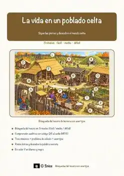
«La vida en un poblado celta» – Búsqueda del tesoro de lectura
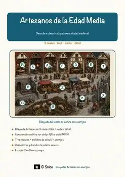
«Artesanos de la Edad Media» – Búsqueda del tesoro de lectura
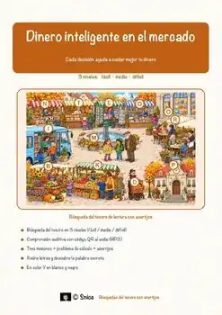
«Dinero inteligente en el mercado» – Búsqueda del tesoro de lectura
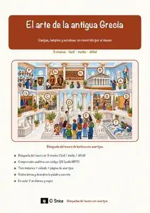
«El arte de la antigua Grecia» – Búsqueda del tesoro de lectura
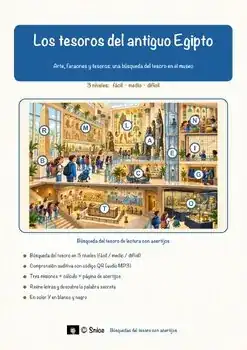
«Los tesoros del antiguo Egipto» – Búsqueda del tesoro de lectura
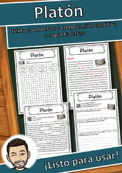
Platón – Ficha de lectura: texto con huecos, comprensión auditiva y sopa de letras
Neil Armstrong – Ficha de lectura: texto con huecos, comprensión auditiva y sopa de letras
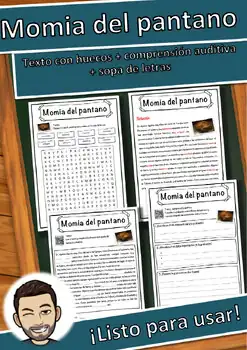
Momia del pantano – Ficha de lectura: texto con huecos, comprensión auditiva y sopa de letras
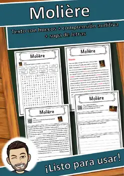
Molière – Ficha de lectura: texto con huecos, comprensión auditiva y sopa de letras
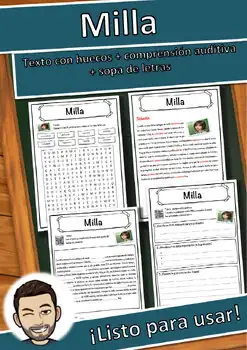
Milla – Ficha de lectura: texto con huecos, comprensión auditiva y sopa de letras
Maximilien Robespierre – Ficha de lectura: texto con huecos, comprensión auditiva y sopa de letras
Martin Luther King – Ficha de lectura: texto con huecos, comprensión auditiva y sopa de letras
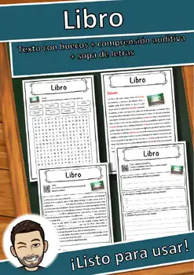
Libro – Ficha de lectura: texto con huecos, comprensión auditiva y sopa de letras
Ley Fundamental para la República Federal de Alemania – Ficha de lectura: texto con huecos, comprensión auditiva y sopa de letras
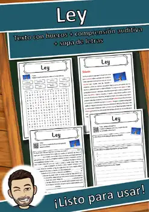
Ley – Ficha de lectura: texto con huecos, comprensión auditiva y sopa de letras
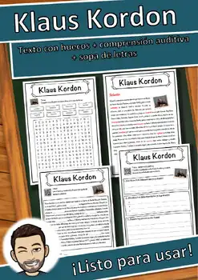
Klaus Kordon – Ficha de lectura: texto con huecos, comprensión auditiva y sopa de letras
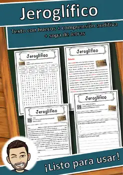
Jeroglífico – Ficha de lectura: texto con huecos, comprensión auditiva y sopa de letras
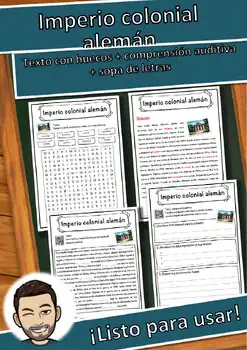
Imperio colonial alemán – Ficha de lectura: texto con huecos, comprensión auditiva y sopa de letras
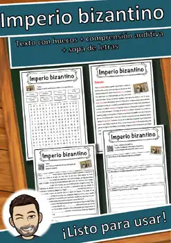
Imperio bizantino – Ficha de lectura: texto con huecos, comprensión auditiva y sopa de letras
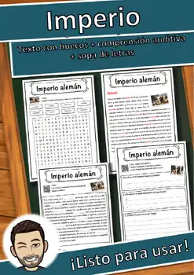
Imperio alemán – Ficha de lectura: texto con huecos, comprensión auditiva y sopa de letras
Iglesia ortodoxa – Ficha de lectura: texto con huecos, comprensión auditiva y sopa de letras
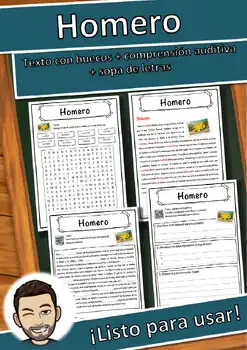
Homero – Ficha de lectura: texto con huecos, comprensión auditiva y sopa de letras
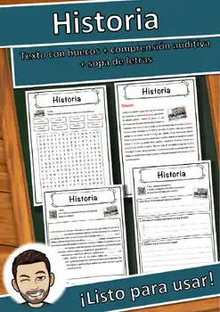
Historia – Ficha de lectura: texto con huecos, comprensión auditiva y sopa de letras
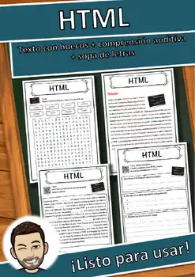
HTML – Ficha de lectura: texto con huecos, comprensión auditiva y sopa de letras
Guerra de Vietnam – Ficha de lectura: texto con huecos, comprensión auditiva y sopa de letras
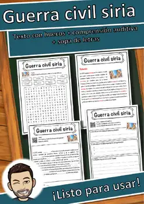
Guerra civil siria – Ficha de lectura: texto con huecos, comprensión auditiva y sopa de letras
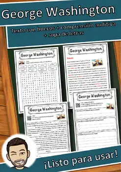
George Washington – Ficha de lectura: texto con huecos, comprensión auditiva y sopa de letras
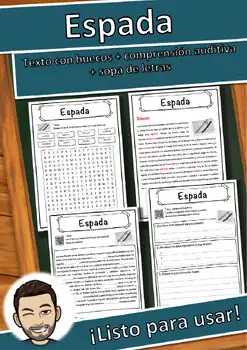
Espada – Ficha de lectura: texto con huecos, comprensión auditiva y sopa de letras
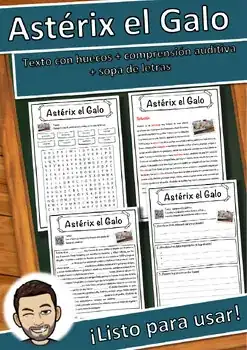
Astérix el Galo – Ficha de lectura: texto con huecos, comprensión auditiva y sopa de letras
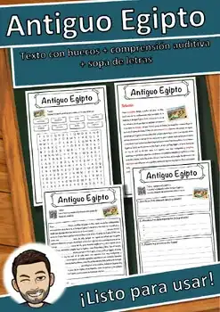
Antiguo Egipto – Ficha de lectura: texto con huecos, comprensión auditiva y sopa de letras
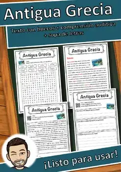
Antigua Grecia – Ficha de lectura: texto con huecos, comprensión auditiva y sopa de letras
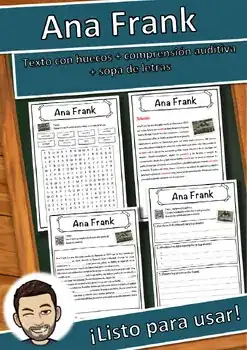
Ana Frank – Ficha de lectura: texto con huecos, comprensión auditiva y sopa de letras
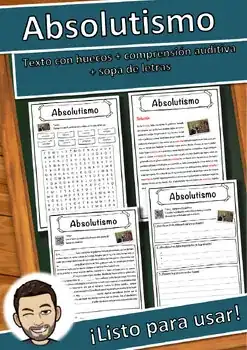
Absolutismo – Ficha de lectura: texto con huecos, comprensión auditiva y sopa de letras
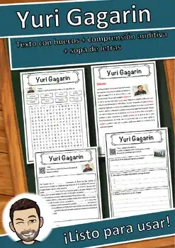
Yuri Gagarin – Ficha de lectura: texto con huecos, comprensión auditiva y sopa de letras
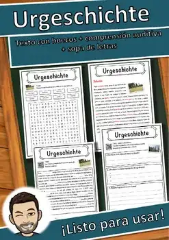
Prehistoria – Ficha de lectura: texto con huecos, comprensión auditiva y sopa de letras
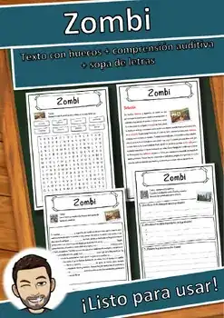
Zombi – Ficha de lectura: texto con huecos, comprensión auditiva y sopa de letras
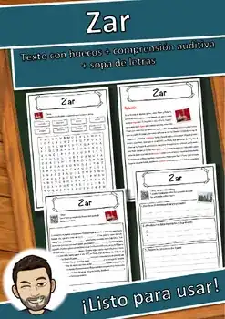
Zar – Ficha de lectura: texto con huecos, comprensión auditiva y sopa de letras
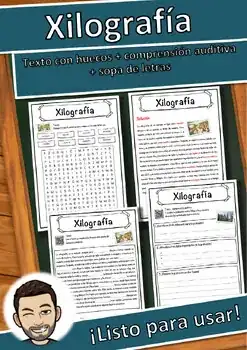
Xilografía – Ficha de lectura: texto con huecos, comprensión auditiva y sopa de letras
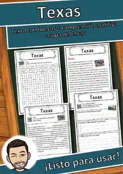
Texas – Ficha de lectura: texto con huecos, comprensión auditiva y sopa de letras
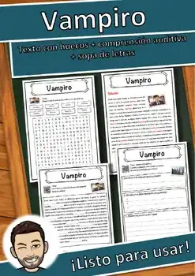
Vampiro – Ficha de lectura: texto con huecos, comprensión auditiva y sopa de letras
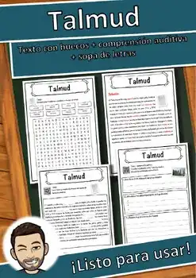
Talmud – Ficha de lectura: texto con huecos, comprensión auditiva y sopa de letras
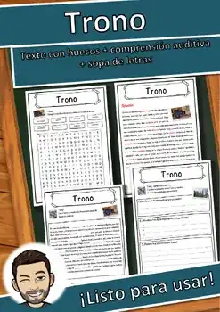
Trono – Ficha de lectura: texto con huecos, comprensión auditiva y sopa de letras
Triticum spelta – Ficha de lectura: texto con huecos, comprensión auditiva y sopa de letras
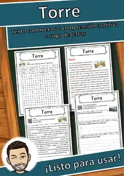
Torre – Ficha de lectura: texto con huecos, comprensión auditiva y sopa de letras
Tiziano – Ficha de lectura: texto con huecos, comprensión auditiva y sopa de letras
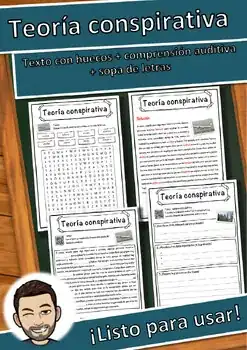
Teoría conspirativa – Ficha de lectura: texto con huecos, comprensión auditiva y sopa de letras
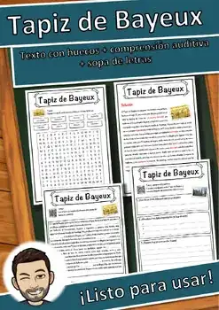
Tapiz de Bayeux – Ficha de lectura: texto con huecos, comprensión auditiva y sopa de letras
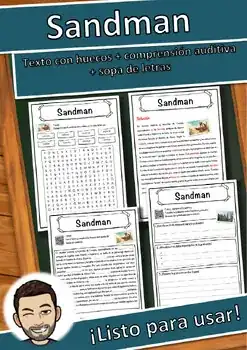
Sandman – Ficha de lectura: texto con huecos, comprensión auditiva y sopa de letras
No se encontraron recursos. Prueba con otra palabra o con otro filtro.